전자계산기조직응용기사 (2015-03-08 기출문제)
1과목: 전자계산기 프로그래밍
1. C 언어의 기억클래스 종류가 아닌 것은?
- External
- Static
- Register
- Point
(정답률: 84%)

2. 매크로 관련 용어 중 매크로 호출 부분에 정의된 매크로코드를 삽입하는 것을 의미하는 것은?
- 매크로 확장
- 매크로 호출
- 매크로 정의
- 매크로 라이브러리
(정답률: 70%)
3. 어셈블리어에서 어떤 기호적 이름에 상수 값을 할당하는 명령은?
- INCLUDE
- ASSUME
- ORG
- EQU
(정답률: 85%)
4. C 언어에서 문자열 출력 함수는?
- gets( )
- puts( )
- getchar( )
- putchar( )
(정답률: 80%)
5. 매크로 기능에 대한 설명으로 가장 적합한 것은?
- 어셈블리 언어로 작성한 프로그램을 다른 컴퓨터의 기계어로 변환시키는 기능이다.
- 어셈블리 언어로 작성한 프로그램 내에 다른 고급 언어를 삽입할 수 있는 기능이다.
- 고급언어로 작성된 프로그램 내에 어셈블리 언어의 문장 및 함수 등을 삽입시키는 기능이다.
- 어셈블리 프로그램에서 반복적으로 나타나는 코드들을 묶어 하나의 새로운 명령으로 정의시키는 기능이다.
(정답률: 85%)
6. C 언어에서 나머지를 구하는 잉여 연산자(modular operator)는?
- #
- $
- &
- %
(정답률: 87%)
7. C 언어의 기억클래스 중 “extern"을 사용하여 선언하는 변수는?
- 자동변수
- 정적변수
- 외부변수
- 레지스터변수
(정답률: 85%)
8. 서브루틴에서 자신을 호출한 곳으로 복귀시키는 어셈블리어 명령은?
- CALL
- LOOP
- NOP
- RET
(정답률: 81%)
9. 어셈블리어 명령에서 다음 설명에 해당하는 것은?
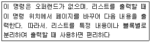
- PUBLIC
- EXTERN
- ASSUME
- EJECT
(정답률: 66%)
10. 한 위치의 문자열을 다른 위치의 문자열과 비교하는 어셈블리어 명령은?
- REPE
- CMPS
- SCAS
- MOVS
(정답률: 85%)
11. 어셈블리어의 특징으로 옳지 않은 것은?
- 어셈블리어는 모든 컴퓨터 기종에 공통으로 적용할 수 있다.
- 어셈블리어는 기계어에 가까운 언어이다.
- 어셈블리어는 기계어와 1 대 1로 대응시켜서 표현한 기호식 표기법이다.
- 어셈블리어에서는 데이터가 기억된 번지를 기호(symbol)로 지정한다.
(정답률: 83%)
12. C 언어의 printf( ) 함수에서 실수를 출력할 때 사용하는 형식지정자는?
- %c
- %d
- %f
- %s
(정답률: 74%)
13. 원시프로그램을 번역할 때 어셈블러에게 요구되는 동작을 지시하는 명령으로서 기계어로 번역되지 않는 명령어를 무엇이라고 하는가?
- macro instruction
- machine instruction
- operand instruction
- pseudo instruction
(정답률: 79%)
14. 객체지향 기법에서 하나 이상의 유사한 객체들을 묶어서 하나의 공통된 특성을 표현한 것으로 자료 추상화의 개념으로 볼 수 있는 것은?
- 메소드
- 메시지
- 클래스
- 인스턴스
(정답률: 86%)
15. 시스템 프로그래밍에 가장 적합한 언어는?
- BASIC
- COBOL
- FORTRAN
- C
(정답률: 87%)
16. C 언어에서 이스케이프 문자의 의미가 잘못된 것은?
- ￦f : 16진수로 표현
- ￦n : 커서를 다음 줄 앞으로 이동
- ￦b : 문자를 출력하고 뒤로 한 칸 이동
- ￦t : 커서를 일정 간격만큼 수평 이동
(정답률: 78%)
17. 하나의 오퍼랜드에 호출할 가로채기 벡터의 번호를 표현하여 가로채기를 요청하는 어셈블리어 명령은?
- TITLE
- INC
- INT
- REP
(정답률: 80%)
18. 작성된 표현식이 BNF의 정의에 의해 바르게 작성되었는지를 확인하기 위하여 만든 트리는?
- menu tree
- king tree
- parse tree
- home tree
(정답률: 87%)
19. 기계어에 대한 설명으로 옳지 않은 것은?
- 각 컴퓨터마다 모두 같은 기계어를 가진다.
- 컴퓨터가 해석할 수 있는 1 또는 0의 2진수로 이루어진다.
- 실행할 명령, 데이터, 기억 장소의 주소 등을 포함한다.
- 프로그램 작성이 어렵고 복잡하다.
(정답률: 85%)
20. 프로그램 수행 순서로 옳은 것은?
- 컴파일러 → 목적프로그램 → 원시 프로그램
- 원시 프로그램 → 목적 프로그램 → 컴파일러
- 목적 프로그램 → 원시 프로그램 → 컴파일러
- 원시 프로그램 → 컴파일러 → 목적 프로그램
(정답률: 79%)
2과목: 자료구조 및 데이터통신
21. 데이터 전송에서 오류 발생의 주된 원인으로 거리가 가장 먼 것은?
- 신호 감쇠 현상
- 지연 왜곡
- 잡음
- 채널 수
(정답률: 79%)
22. OSI참조모델에서 종단 간 메시지 전달 서비스를 담당하는 계층은?
- 물리 계층
- 트랜스포트 계층
- 데이터 링크 계층
- 세션 계층
(정답률: 68%)
23. 패킷교환 방식에 대한 설명으로 틀린 것은?
- 데이터 그램과 가상회선 방식으로 구분된다.
- 저장 전달 방식을 사용한다.
- 전송하려는 각 패킷에는 헤더가 부착된다.
- 전송할 수 있는 패킷의 길이는 제한이 없다.
(정답률: 85%)
24. TCP/IP 관련 프로토콜 중 응용계층에 해당하지 않는 것은?
- SMTP
- FTP
- ICMP
- SNMP
(정답률: 62%)
25. A와 B 사이에서 인터네트워킹을 위한 브리지(Bridge)의 일반적 기능으로 옳지 않은 것은?
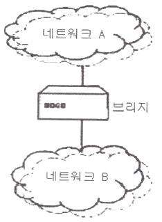
- 네트워크 A에서 전송한 모든 프레임을 읽고, 네트워크 B로 주소가 지정된 프레임들을 받아들인다.
- 네트워크 B에 대한 매체 접근 제어 프로토콜을 사용하여 네트워크 B에게로 프레임을 재전송한다.
- OSI 참조 모델의 데이터 링크 계층에 해당하는 것으로 LAN 프로토콜 중 MAC 계층을 지원한다.
- 네트워크 A에서 송신한 프레임의 내용과 형식을 수정한다.
(정답률: 63%)
26. 각 채널별로 타임슬롯을 사용하나 데이터를 전송하고자 하는 채널에 대해서만 슬롯을 유동적으로 배정하며, 비트블록에 데이터뿐만 아니라 목적지 주소에 대한 정보도 포함하는 다중화방식은?
- 파장 분할 다중화방식(WDM)
- 통계적 시분할 다중화방식(STDM)
- 주파수 분할 다중화방식(FDM)
- 코드 분할 다중화방식(CDM)
(정답률: 73%)
27. 데이터 링크 제어 문자 중 수신측에서 송신측으로 부정응답으로 보내는 것은?
- NAK
- STX
- ACK
- ENQ
(정답률: 80%)
28. 호스트의 물리적 주소로부터 IP 주소를 구할 수 있도록 하는 프로토콜은?
- ARP
- FTP
- IGMP
- RARP
(정답률: 62%)
29. ITU-T 표준인 X.25가 정의하고 있는 것은?
- 경로 설정 알고리즘 정의
- 동기식 1200bps 변복조기 정의
- 전용 회선을 위한 4800bps 변복조기 정의
- 사용자 장치(DTE)와 패킷 네트워크 노드(DCE)간의 데이터 교환 절차 정의
(정답률: 64%)
30. 여러 신호를 전송 매체의 서로 다른 주파수 대역을 이용하여 동시에 전송하는 것은?
- 시분할 다중화
- 주파수 분할 다중화
- 동기식 전송
- 비동기식 전송
(정답률: 80%)
31. 다음 자료에 대하여 버블 정렬을 사용하여 오름차순 정렬할 경우 1회전 후의 결과는?
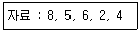
- 5, 8, 6, 2, 4
- 2, 8, 5, 6, 4
- 5, 6, 2, 4, 8
- 5, 2, 4, 6, 8
(정답률: 82%)
32. 선형 구조에 해당하지 않는 것은?
- 데크
- 큐
- 스택
- 트리
(정답률: 83%)
33. 분산 데이터베이스 시스템에 대한 설명으로 옳지 않은 것은?
- 소프트웨어 개발 비용이 감소한다.
- 지역 자치성이 높다.
- 자료의 공유성이 향상된다.
- 신뢰성 및 가용성이 높다.
(정답률: 72%)
34. 색인 순차 파일의 색인 구역에 해당하지 않는 것은?
- Track Index Area
- Cylinder Index Area
- Master Index Area
- Overflow Index Area
(정답률: 81%)
35. 트랜잭션의 특성에 해당하지 않는 것은?
- Isolation
- Consistency
- Atomicity
- Distribution
(정답률: 84%)
36. 데이터베이스의 등장 배경으로 거리가 먼 것은?
- 물리적인 주소가 아닌 데이터 값에 의한 검색을 수행하고 싶었다.
- 여러 사용자가 데이터를 공유해야 할 필요가 생겼다.
- 데이터의 가용성 증가를 위해 중복을 허용하고 싶었다.
- 데이터의 수시적인 구조 변경에 대해 응용 프로그램을 매번 수정하는 번거로움을 줄여보고 싶었다.
(정답률: 80%)
37. 데이터베이스의 특성으로 옳지 않은 것은?
- 실시간 접근성(Real-Time Accessibility)
- 계속적 변화(Continuous Evolution)
- 동시 공용(Concurrent Sharing)
- 주소에 의한 참조(Location Reference)
(정답률: 81%)
38. 스택의 응용 분야와 거리가 먼 것은?
- 인터럽트의 처리
- 운영체제의 작업 스케줄링
- 부프로그램 호출시 복귀주소 저장
- 컴파일러를 이용한 언어번역
(정답률: 74%)
39. 다음 트리를 전위 순회(Pre-Order Traversal)할 경우 세 번째로 탐색하는 노드는?
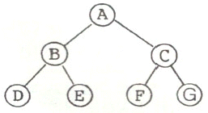
- A
- B
- D
- F
(정답률: 81%)
40. 데이터베이스 설게 단계로 옳은 것은?
- 요구조건분석 → 논리설계 → 개념설계 → 물리설계
- 요구조건분석 → 개념설계 → 논리설계 → 물리설계
- 개념설계 → 요구조건분석 → 물리설계 → 논리설계
- 개념설계 → 요구조건분석 → 논리설계 → 물리설계
(정답률: 87%)
3과목: 전자계산기구조
41. 전파지연(propagation delay)에 대한 설명으로 옳지 않은 것은?
- gate상의 operation speed는 전파지연에 반비례한다.
- 전파지연은 ALU path에서 가장 짧은 delay를 말한다.
- 더 빠른 gate를 사용함으로써 전파지연시간을 줄일 수 있다.
- ALU의 parallel-adder에 전파지연을 줄이기 위해 carry look ahead를 사용한다.
(정답률: 49%)
42. 불 함수식 F = (A + B) · (A + C)를 간략화 한 것은?
- F = A + BC
- F = B + AC
- F = A + AC
- F = C + AB
(정답률: 68%)
43. 다음 회로의 명칭은?
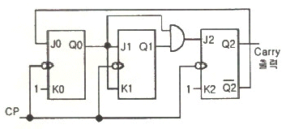
- 동기식 3진 카운터
- 동기식 4진 카운터
- 동기식 5진 카운터
- 동기식 6진 카운터
(정답률: 47%)
44. 폰 노이만(von neumann)형의 컴퓨터 연산장치가 갖는 기능에 속하지 않는 것은?
- 제어 기능
- 함수연산 기능
- 전달 기능
- 번지 기능
(정답률: 46%)
45. 짝수 패리티 비티의 해밍 코드로 0011011을 받았을 때 오류가 수정된 정확한 코드는?
- 0111011
- 0001011
- 0011001
- 0010101
(정답률: 41%)
46. 인터럽트의 처리 루틴의 순서로 올바른 것은?
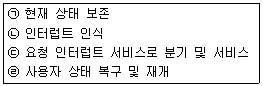
- (ㄱ) → (ㄴ) → (ㄷ) → (ㄹ)
- (ㄴ) → (ㄷ) → (ㄱ) → (ㄹ)
- (ㄴ) → (ㄱ) → (ㄹ) → (ㄷ)
- (ㄴ) → (ㄱ) → (ㄷ) →(ㄹ)
(정답률: 68%)
47. 인터럽트 서비스 루틴의 기능이 아닌 것은?
- 처리기 상태 복구
- 인터럽트 원인 결정
- 처리기 레지스터의 상태 보존
- 상대적으로 높은 레벨의 마스크 레지스터 클리어
(정답률: 47%)
48. 컴퓨터의 메모리 용량이 4096워드이고, 워드 당 16bit의 데이터를 갖는다면 MAR은 몇 비트인가?
- 12
- 16
- 18
- 20
(정답률: 40%)
49. 제어장치를 구현하는 제어 방식이 아닌 것은?
- 상태 플립플롭 제어 방식
- RAM(random access memory) 제어 방식
- PLA(programmable logic array) 제어 방식
- 마이크로프로그램 제어 방식
(정답률: 50%)
50. Flynn의 컴퓨터 시스템 분류 제안 중에서 하나의 데이터 흐름이 다수의 프로세서들로 전달되며, 각 프로세서는 서로 다른 명령어를 실행하는 구조는?
- 단일 명령어, 단일 데이터 흐름
- 단일 명령어, 다중 데이터 흐름
- 다중 명령어, 단일 데이터 흐름
- 다중 명령어, 다중 데이터 흐름
(정답률: 63%)
51. 미소의 콘덴서에 전하를 충전하는 원리를 이용하는 메모리로, 재충전(Refresh)이 필요한 메모리는?
- SRAM
- DRAM
- PROM
- EPROM
(정답률: 65%)
52. 다중처리기에 의한 시스템을 구성할 때 고려사항이 아닌 것은?
- 메모리 충돌문제
- 메모리 용량문제
- 캐시 일관성 문제
- 메모리 접근의 효율성 문제
(정답률: 42%)
53. 다음 [그림]에서 F를 A, B의 부울식으로 나타내면? (단, 그림에서는 x는 선의 절단을 표시함)
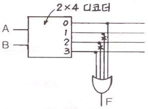
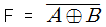
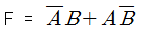
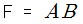
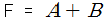
(정답률: 48%)
54. FETCH 메이저 상태에서 수행되는 마이크로오퍼레이션이 아닌 것은?
- MAR ← PC : PC의 값을 MAR로 이동
- PC ← PC + b : PC의 값을 인스트럭션의 바이트 수 b만큼 증가
- IR ← MBR(OP) : MBR에서 연산(operation) 부분을 인스트럭션 레지스터로 옮김
- IEN ← 0 : 인터럽트를 disable 시킴
(정답률: 58%)
55. 캐시와 주기억장치로 구성된 컴퓨터에서 주기억장치의 접근 시간이 200 ns, 캐시 적중률이 0.9, 평균 접근시간이 30 ns 일 때 캐시 메모리의 접근 시간은?
- 9 ns
- 10 ns
- 11 ns
- 12 ns
(정답률: 40%)
56. 메모리 관리 하드웨어(MMU)의 기본적인 역할에 대한 설명으로 옳지 않은 것은?
- 논리 주소를 물리 주소로 변환
- 허용되지 않는 메모리 접근을 방지
- 메모리 동적 재 배치
- 가상 주소 공간을 물리 주소 공간으로 압축
(정답률: 55%)
57. 기억장치에 기억된 정보를 액세스하기 위하여 주소를 사용하는 것이 아니라 기억된 정보의 일부분을 이용하여 원하는 정보를 찾는 것은?
- Random Access Memory
- Associative Memory
- Read Only Memory
- Virtual Memory
(정답률: 67%)
58. CISC 구조와 RISC 구조를 비교하였을 때, RISC구조의 특징으로 틀린 것은?
- 명령어가 복잡하다.
- 프로그램 길이가 길다.
- 레지스터 개수가 많다.
- 파이프라인 구현이 용이하다
(정답률: 49%)
59. 실행 사이클에서 다음 마이크로 연산이 나타내는 동장은?
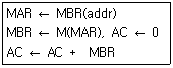
- ADD to AC
- OR to AC
- STORE to AC
- LOAD to AC
(정답률: 39%)
60. 버스 클록(bus clock)이 2.5GHz이고, 데이터 버스의 폭이 8비트인 버스의 대역폭에 가장 근접한 것은?
- 약 25 GBytes/s
- 약 16 GBytes/s
- 약 2.5 GBytes/s
- 약 1.6 GBytes/s
(정답률: 53%)
4과목: 운영체제
61. 운영체제에 대한 설명으로 옳지 않은 것은?
- 다중 사용자와 다중 응용프로그램 환경 하에서 자원의 현재 상태를 파악하고 자원 분배를 위한 스케줄링을 담당한다.
- CPU, 메모리 공간, 기억 장치, 입/출력 장치 등의 자원을 관리한다.
- 운영체제의 종류로는 매크로 프로세서, 어셈블러, 컴파일러 등이 있다.
- 입출력 장치와 사용자 프로그램을 제어한다.
(정답률: 72%)
62. 운영체제의 성능평가 요인 중 다음 설명에 해당하는 것은?
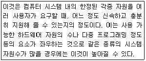
- Throughput
- Availability
- Turn around Time
- Reliability
(정답률: 70%)
63. 분산 운영체제의 도입 취지로 거리가 먼 것은?
- 자원 공유
- 연산속도 향상
- 신뢰성 증대
- 보안성 향상
(정답률: 70%)
64. 은행가 알고리즘은 다음 교착상태 관련 연구 분야 중 어떤 분야에 속하는가?
- 예방
- 발견
- 회피
- 회복
(정답률: 72%)
65. UNIX의 특징으로 옳지 않은 것은?
- 하나 이상의 작업에 대하여 백그라운드에서 수행 가능하다.
- Multi-User는 지원하지만 Multi-Tasking은 지원하지 않는다.
- 트리 구조의 파일 시스템을 갖는다.
- 이식성이 높으며 장치 간의 호환성이 높다.
(정답률: 75%)
66. 다중 처리가 운영체제 구조 중 주/종(Master/Slave)처리기에 대한 설명으로 옳지 않은 것은?
- 주 프로세서가 고장날 경우에도 전체 시스템은 작동한다.
- 비대칭 구조를 갖는다.
- 종 프로세서는 입출력 발생시 주 프로세서에게 서비스를 요청한다.
- 주 프로세서는 운영체제를 수행한다.
(정답률: 69%)
67. 보안 유지 방식 중 사용자의 신원을 확인한 후 권한이 있는 사용자에게만 시스템에 접근하게 하는 방법은?
- 운용보안
- 시설보안
- 사용자 인터페이스 보안
- 내부보안
(정답률: 65%)
68. 메모리 관리 기법 중 Worst fit 방법을 사용할 경우 10K 크기의 프로그램 실행을 위해서는 어느 부분이 할당되는가?
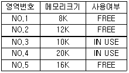
- NO.2
- NO.3
- NO.4
- NO.5
(정답률: 71%)
69. HRN 방식으로 스케줄링 할 경우, 입력된 작업이 다음과 같을 때 우선순위가 높은 순서부터 차례로 옳게 나열한 것은?
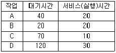
- B → A → C → D
- B → A → D → C
- C → D → A → B
- D → C → A → B
(정답률: 62%)
70. 초기 헤드 위치가 50이며 트랙 0 방향으로 이동 중이다. 디스크 대기 큐에 다음과 같은 순서의 액세스 요청이 대기 중 일 때, SSTF 스케줄링을 사용하여 모든 처리를 완료하고자 한다. 가장 먼저 처리되는 트랙은? (단, 가장 안쪽 트랙 0, 가장 바깥쪽 트랙 200)(오류 신고가 접수된 문제입니다. 반드시 정답과 해설을 확인하시기 바랍니다.)
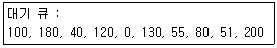
- 0
- 40
- 51
- 200
(정답률: 19%)
71. UNIX 시스템에서 커널의 수행기능에 해당하지 않는 것은?
- 프로세스 관리
- 기억장치 관리
- 입출력 관리
- 명령어 해석
(정답률: 63%)
72. 운영체제의 목적이 아닌 것은?
- 처리 능력의 향상
- 반환 시간의 최대화
- 사용 가능도 증대
- 신뢰도 향상
(정답률: 74%)
73. 페이징 기법과 세그먼테이션 기법에 대한 설명으로 옳지 않은 것은?
- 페이징 기법에서는 주소 변환을 위한 페이지 맵 테이블이 필요하다.
- 페이지 크기로 일정하게 나누어진 주기억장치의 단위를 페이지 프레임이라고 한다.
- 페이징 기법에서는 하나의 작업을 다양한 크기의 논리적인 단위로 나눈 후 주기억장치에 적재시켜 실행한다.
- 세그먼테이션 기법을 이용하는 궁극적인 이유는 기억공간을 절약하기 위해서이다.
(정답률: 47%)
74. RR(Round-Robin) 스케줄링에 대한 설명으로 옳지 않은 것은?
- Time Slice가 작을 경우 문맥 교환이 자주 일어난다.
- Time Sharing System을 위해 고안된 방식이다.
- FCFS 알고리즘을 선점 형태로 변형한 기법이다.
- 우선 순위는 “(대기시간+서비스시간)/서비스시간”의 계산으로 처리한다.
(정답률: 67%)
75. 파일 디스크립터(File Descriptor)에 대한 설명으로 옳지 않은 것은?
- 파일 관리를 위한 파일 제어 블록이다.
- 시스템에 따라 다른 구조를 가질 수 있다.
- 보조기억장치에 저장되어 있다가 파일이 개방될 때 주기억장치로 옮겨진다.
- 사용자의 직접 참조가 가능하다.
(정답률: 72%)
76. 프로세스 제어 블록을 갖고 있으며, 현재 실행 중 이거나 곧 실행 가능하며, CPU를 할당받을 수 있는 프로그램으로 정의할 수 있는 것은?
- 워킹 셋
- 세그먼테이션
- 모니터
- 프로세스
(정답률: 58%)
77. UNIX에서 파일 내용을 화면에 표시하는 명령과 파일의 소유자를 변경하는 명령을 순서적으로 옳게 나열한 것은?
- dir, chown
- cat, chown
- type, chmod
- type, cat
(정답률: 67%)
78. 4개의 페이지를 수용할 수 있는 주기억장치가 있으며, 초기에는 모두 비어 있다고 가정한다. 다음의 순서로 페이지 참조가 발생할 때, FIFO 페이지 교체 알고리즘을 사용할 경우 페이지 결함의 발생 횟수는?
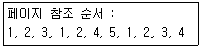
- 6회
- 7회
- 8회
- 9회
(정답률: 47%)
79. 프로세서의 상호 연결 구조 중 하이퍼 큐브 구조에서 각 CPU가 3개의 연결점을 가질 경우 총 CPU의 개수는?
- 2
- 3
- 4
- 8
(정답률: 65%)
80. 여러 사용자들이 공유하고자 하는 파일들을 하나의 디렉토리 또는 일부 서브트리에 저장해 놓고 여러 사용자들이 이를 같이 사용할 수 있도록 지원하기 위한 가장 효율적인 디렉토리 구조는?
- 비순환 그래프 디렉토리 구조
- 트리 디렉토리 구조
- 1단계 디렉토리 구조
- 2단계 디렉토리 구조
(정답률: 45%)
5과목: 마이크로 전자계산기
81. 스택 작동 명령어의 번지 지점 방식은?
- 묵시적 기법(implied mode)
- 레지스터 기법(register mode)
- 상대 번지(relative addressing) 기법
- 실효 번지(effective addressing) 기법
(정답률: 49%)
82. 어느 프로그램 중 0123 번지에 CALL A 명령이 있다. 이 CALL A를 수행한 후 PC에 기억된 값은? (단, 명령어의 길이는 8비트이다.)
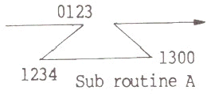
- 0123
- 0124
- 0131
- 1300
(정답률: 74%)
83. 마이크로프로그램에 관한 설명으로 틀린 것은?
- 마이크로 인스트럭션으로 구성되어 있다.
- 제어장치에 이용하는 경향이 있다.
- 마이크로프로그램은 중앙처리장치에 기억된다.
- 대규모 집적회로의 이용이 가능해서 제어기의 비용이 절감된다.
(정답률: 52%)
84. 1K x 1비트 용량의 RAM에 사용되는 어드레스 디코더의 입력 어드레스 라인의 개수는?
- 10
- 9
- 8
- 7
(정답률: 76%)
85. 주변장치에 대하여 isolated I/O 방식을 사용하는 시스템의 동작 설명으로 틀린 것은?
- IN, OUT 등의 특정한 I/O 명령어를 가진다.
- 메모리 전송인지 입출력 전송인지를 구별하기 위한 별도의 분리된 제어선이 필요하다.
- 동일 어드레스가 메모리와 I/O 장치에 중복 사용될 수 있다.
- 메모리 요구 명령어로 I/O 장치요구 명령을 할 수 있다.
(정답률: 33%)
86. 마이크로컴퓨터를 위한 프로그램을 개발할 때, 다른 컴퓨터를 이용하여 타겟 마이크로컴퓨터시스템의 시스템 및 응용소프트웨어 등을 개발할 수 있도록 하는 것은?
- cross assembler
- debugger
- screen editor
- simulator
(정답률: 75%)
87. 다음 중 CMOS형 IC의 특징은?
- 소비 전력이 크다.
- 잡음 여유도가 크다.
- P형이나 N형보다 공정이 간단하다.
- 전원 전압 범위가 적다.
(정답률: 51%)
88. 연계 편집 프로그램(linking editor)이 목적 프로그램을 입력으로 읽을 때 출력으로 생성하는 프로그램은?
- 로드 프로그램(load program)
- 유틸리티 프로그램(utility program)
- 매칭 프로그램(matching program)
- 서비스 프로그램(service program)
(정답률: 64%)
89. 전자계산기의 제어 상태 중 명령을 인출하여 해독하는 단계인 Fetch State에 대한 마이크로 오퍼레이션이다. ( )안의 가, 나 에 들어갈 내용이 바르게 나열된 것은?
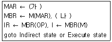
- 가 - PC
나 - PC ← PC + 1 - 가 - IR
나 - IR ← IR + 1 - 가 - MBR
나 - PC ← PC + 1 - 가 - PC
나 - MAR ← PC + 1
(정답률: 61%)
90. 256×2램(RAM)으로 주소 100016 ~ 17FF16 사이의 기억장치를 구성하려면, 필요한 램의 개수는? (단, 기억장치 한 번지는 8비트로 되어 있다.)
- 8
- 16
- 32
- 64
(정답률: 38%)
91. 누산기(accumulator)를 clear 하고자 할 때 사용하면 효과적인 명령어는?
- EX-OR
- SHIFT
- ROTATE
- EXCHANGE
(정답률: 73%)
92. 순서도는 일반적으로 표시되는 정보에 따라 종류를 구분하게 되는데 다음 중 순서도에 해당되지 않는 것은?
- 시스템 순서도(system flowchart)
- 일반 순서도(general flowchart)
- 세부 순서도(detail flowchart)
- 실체 순서도(entity flowchart)
(정답률: 68%)
93. 일반적으로 8비트 마이크로프로세서(microprocessor)라 할 때, 그 길이가 8비트 인 것은?
- 누산기(Accumulator)
- 프로그램 카운터(Program Counter)
- 스택 포인터(Stack Pointer)
- 어드레스 레지스터(Address Register)
(정답률: 46%)
94. 마이크로컴퓨터를 구성하는 주요 버스가 아닌 것은?
- 검사 버스(test bus)
- 데이터 버스(data bus)
- 주소 버스(address bus)
- 제어 버스(control bus)
(정답률: 82%)
95. DRAM(Dynamic Random Access Memory)에 대한 설명으로 옳은 것은?
- Content Addressable 메모리이다.
- 전원이 끊어져도 메모리 상태를 지워지지 않는다.
- 주기적으로 메모리를 refresh 해야 한다.
- Dynamic Relocation이 용이한 메모리이다.
(정답률: 62%)
96. 데이터의 저장 명령으로부터가 기억 장치에 저장하기 위하여 기억 장치에 데이터가 전송될 때까지의 시간을 의미하는 것은?
- data transmission time
- access time
- seek time
- latency time
(정답률: 64%)
97. 가변 헤드 디스크(moving head disk)에서의 탐색(Seek)시간을 옳게 설명한 것은?
- 디스크의 초당 회전 시간을 말한다.
- 첫 번째 트랙에서 마지막 트랙까지 헤드를 옮기는 시간이다.
- 원하는 정보를 기억하고 있는 실린더에 접근하기 위해서 헤드를 옮기는데 소요되는 시간이다.
- 트랙과 이웃 트랙까지 헤드를 옮기는 시간이다.
(정답률: 80%)
98. 중앙처리장치의 제어를 필요로 하지 않는 입/출력 방법은?
- 메모리 맵에 의한 입/출력
- DMA에 의한 입/출력
- 인터럽트 제어에 의한 입/출력
- 프로그램 제어에 의한 입/출력
(정답률: 72%)
99. CPU와 주변장치 사이의 입·출력 방법이 아닌 것은?(오류 신고가 접수된 문제입니다. 반드시 정답과 해설을 확인하시기 바랍니다.)
- Handshaking
- DMA
- Polling
- Load on Call
(정답률: 56%)
100. MAR에 관한 설명으로 옳은 것은?
- 프로그램 카운터의 일부이다.
- 프로그램 카운터와 관계 없다.
- 프로그램 카운터와 MAR의 기능은 전혀 다르다.
- 프로그램 카운터의 내용이 MAR로 전달된다.
(정답률: 75%)